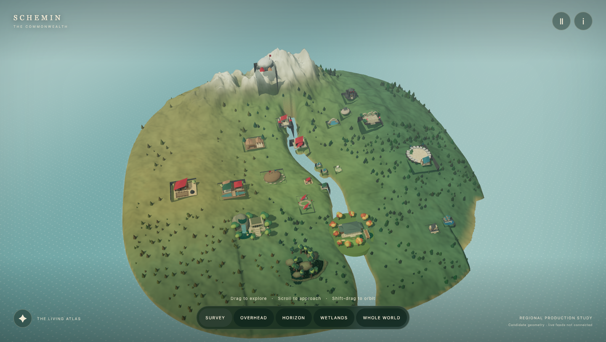

Six original 1440 × 813 Chrome screenshots from the Apple M3 Pro's Three/WebGL2 observer, captured against a single exact source commit. Explore the established world, inspect Country Club of Jackson, read its location-exact recorded history, return to the identical viewpoint, return to the unlabeled world, then observe Waterfall Temple under the synthetic El Niño-loss global calm.

Unlabeled Commonwealth world
No place is hidden pending a visitor unlock. The world remains available without login.